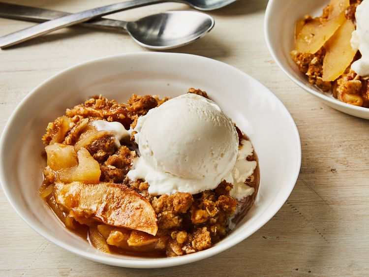

APPLE CRISP
This apple crisp recipe is a simple yet delicious fall dessert that's great served warm with vanilla ice cream.


This apple crisp recipe is a simple yet delicious fall dessert that's great served warm with vanilla ice cream.